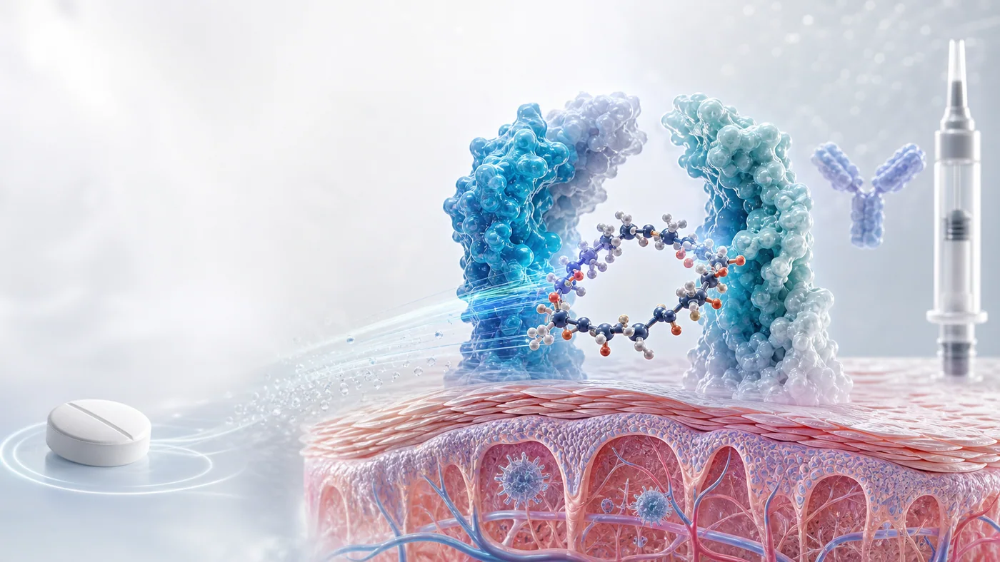

文章歸檔
2026 年 7 月文章
本月共 32 篇 Drugnews 分析，依時間倒序呈現。

半年千億，買的是時間
2026 上半年生醫併購轉熱，但 BioSpace 的 52 筆與 IQVIA 的 42 筆不能硬拼。真正的主線，是專利懸崖迫使大藥廠用現金購買可計算的臨床時間。

一顆藥，搶針劑的飯碗
ICOTYDE 上市首季超過 18,000 張處方，證明口服 IL-23R 胜肽有需求；真正決定估值的，仍是付費處方、續方、支付品質與多適應症兌現。

羅氏的隱藏底牌：19 個新分子排隊接棒，下一個成長週期怎麼長出來？
羅氏 2025 年製藥銷售 476.69 億瑞士法郎，Ocrevus、Hemlibra 與 Vabysmo 已撐起約三分之一收入。真正值得追的不是 19 個新分子的總數，而是 giredestrant、fenebrutinib、減重、阿茲海默症與蛋白質降解資產能否沿既有臨床、診斷與商業通路準時接棒。

SpaceX 上太空，錢在晶體裡？微重力製藥的第一桶金
SpaceX 讓低軌往返逐漸有了班次，但火箭不是新藥公司。本文從 Keytruda 結晶、SpaceMD、Varda、英國監管與台灣任務，拆解微重力製藥能否通過重複、放大與監管三道商業考驗。

Biotech 不賣，憑什麼？五張門票決定它能否長成 Biopharma
被收購不是 Biotech 唯一的成功終點。本文以 argenx、Insmed、Incyte 與 Revolution Medicines 為四個截面，檢驗產品證據、現金引擎、第二曲線、全球執行與融資選項，並拆解保留控制權的真實成本。

Xtandi 之後，安斯泰來靠誰？從單一明星藥到腫瘤平台的四道驗證門
Xtandi 仍主導安斯泰來腫瘤收入；Padcev、Vyloy 與下一代 CLDN18.2 資產能否在 LOE 後形成可重複的產品平台，才是下一段考題。

聯手巨頭卡位 MASH：Madrigal 把 Rezdiffra 做成基石藥，小核酸開始接棒
Rezdiffra 已把 MASH 市場與商業化基礎設施打開；Madrigal 再以 Ribo 六條 siRNA 管線與 Arrowhead ARO-PNPLA3，建立基石藥加精準聯用矩陣。

HORIZON：Lp(a) 降了，心梗會少嗎？
Pelacarsen 已證明能大幅降低 Lp(a)，但 HORIZON 真正要回答的是：在標準治療之上，生物標記下降能否轉成更少的心血管死亡、心肌梗塞、中風與緊急再血管化。

動物實驗不是消失，而是藥物研發規則開始換代
CDE 的 NAMs 先鋒計畫為藥企與方法開發者開出雙軌入口；真正的考題是可重複、可驗證且被監管接受的人體相關證據。

當 ADC 走進自體免疫：不是殺得更狠，而是調得更準
自體免疫 ADC 的價值不在把腫瘤細胞毒 payload 搬到免疫細胞，而在把 glucocorticoid、ASO、siRNA 等強效免疫調節作用定向送到真正需要干預的細胞；LFD-200 的早期人體訊號，是這條路第一次重要的機制驗證。

又一次RevMed 直接掀桌，胰臟癌進入 RAS 組合療法時代
Daraxonrasib 已用第三期總生存期資料抬高胰臟癌 RAS 賽道門檻；zoldonrasib 與 pan-RAS 或化療的早期組合訊號，則把競爭從單藥推向治療生態系。

百億美元併購新狂潮
Vertex 以約 100 億美元收購 Crinetics，映照 Big Pharma 併購審美的轉向：不再只買規模或熱門平台，而是買細分市場統治力、技術代差與商業確定性。

諾貝爾獎後，Treg 第一個獲批藥還不能急著喊：真正的考題是免疫耐受怎麼做成產品
諾貝爾獎照亮 Treg 科學，但產業價值要看免疫耐受能否被做成可放行、可追蹤、可定價、可複製的產品，而不是急著追逐未經核實的第一款獲批敘事。

ADC 下一場戰爭：諾華 15 億美元買 Myricx，真正搶的是新型 payload
諾華最高 15 億美元收購 Myricx，真正買下的不只是兩條 ADC 管線，而是可能改寫安全窗、耐藥與平台估值的新型 NMTi payload。

大模型公司走進 AI 製藥：Anthropic 推出 Claude Science，模型公司開始把藥物研發當成真實戰場
Anthropic 推出 Claude Science 並啟動藥物發現計畫，顯示大模型公司正從科研工具走向真實研發工作流；AI 製藥最終仍要用實驗、臨床資料與可交易資產證明價值。

先贏不是贏：Roche divarasib 把 KRAS 賽道推進世代淘汰戰
Roche 的 divarasib 在頭對頭三期試驗中擊敗第一代 KRAS G12C 抑制劑，代表 RAS 賽道已從證明可成藥，進入用臨床硬終點淘汰上一代產品的競爭。

社恐神藥三期踩煞車：Fasedienol 不是輸在故事，而是輸在 CNS 新藥最難證明的一格
一款藥最迷人的時候，常常也是它最危險的時候：市場先愛上故事，臨床才慢慢追問證據。

痛風新藥被 FDA 打回票：NASP 沒輸在療效，而是卡在製造可信度
FDA 並未指出影響 NASP 核准可能性的臨床療效或安全性問題，真正要求補強的是 CMC 控制策略與委託製造設施缺失。這封 CRL 提醒投資人：越接近上市，製造可信度越是藥品價值的一部分。

【基本面系列】泰福-KY 合理估值是多少？TX05 CRL 後，41.65 元買到的是什麼？
泰福-KY 不是單純 biosimilar 題材股。這篇把 TX01、TX05、Bora Biologics、San Diego 生物製劑 CDMO、現金水位與股本稀釋拆成 SOTP，判斷 38.55 元附近是否真的便宜。

日本為什麼長不出全球級 Biotech？問題不在科學，而在產業生態
日本不是缺少科學，也不是缺少大藥廠，而是缺少把大學技術、人才、資本、臨床與 BD 串成全球級 Biotech 的連續生態。

生技公司估值不是看新聞標題：6 個會改變模型的參數
新聞只告訴你發生了什麼；估值要問的是，事件究竟改變成功率、上市時間、患者池、峰值銷售、權利經濟，還是現金與稀釋風險。

GLP-1 下半場：dorzagliatin（多格列艾汀）想解決的，不是減重更猛，而是長期用得住
GLP-1 競爭進入長期維持與聯用下半場，dorzagliatin 的價值不在取代減重藥，而是可能成為代謝治療的可持續底座。

下週雷達｜5 個可能重算台灣 biotech 估值的全球訊號：ADC、監管、公告、BD 與資金折現率
這篇不是新聞清單，而是會員版下週雷達：把 ADC、FDA／EMA、台灣公司公告、大藥廠 BD 與資金環境五個訊號，翻成會改變成功率、上市時間、峰值銷售、折現率、現金水位與 BD 機率的估值參數。

【基本面系列】保瑞合理估值是多少？它不是 CDMO 題材股，而是台灣少數能用併購把藥品現金流做大的製藥平台
保瑞不是單純 CDMO 題材，也不是普通學名藥公司。這篇用營收、EBITDA、自由現金流、淨負債與平台倍數，重算 412 元附近到底買到什麼。

【輝瑞 ADC 賭局：430 億美元買下 Seagen 之後，為什麼 3SBio 的 PD-1/VEGF 雙抗變成新支點？】
sigvotatug vedotin Phase III 單藥失利後，輝瑞的 430 億美元 Seagen ADC 賭局正轉向 3SBio PD-1/VEGF 雙抗與聯合療法底座。

通用型 CAR-T 的 2026 從低谷回暖
邏輯很簡單：傳統自體 CAR-T 需要取出患者自己的 T 細胞，送到工廠改造、擴增、檢驗，再回輸到患者體內。療效可以很強，但等待時間長、成本高、製程複雜，病情進展太快或 T 細胞品質太差的患者，常常等不到治療。

【事件型估值快評】浩鼎 ADC 重估：市場買的是 TROP2 題材，還是 GlycOBI 平台選擇權？
浩鼎 ADC 重估不能只看 TROP2 題材。這篇用 OBI-992、OBI-902、GlycOBI、BD 選擇權與 SOTP，重算合理市值與上修／下修條件。

半年併購 1,340 億美元：Big Pharma 到底在搶什麼？
2026 年才過一半，全球製藥業的併購節奏已經快到讓人有點恍神。

美國 HHS 啟動 Operation TrialBlazer：臨床試驗規則要變了，新藥競爭也要變了
2026 年 6 月 22 日，美國衛生與公共服務部，也就是 HHS，啟動了一項名為 Operation TrialBlazer 的部門級臨床試驗改革計畫。

拒絕被併購的 RevMed：Biotech 的獨立時代
圍繞 Revolution Medicines（RevMed）的併購傳聞，一直沒有真正停過。

合成致死二十年：為什麼 PARP 之後，下一個神藥遲遲沒有出現？
2005 年，《Nature》兩篇經典研究把 BRCA／PARP 這組關係推上舞台。

摒棄「鐵拳教育」：ADHD 新藥 centanafadine IIIb 期成功，上市只差臨門一腳
Otsuka 的 ADHD 新藥 centanafadine 公布成人 ADHD 合併焦慮症 IIIb 期積極結果，FDA 已接受 NDA 並給予優先審查。這不只是新藥進度，也反映 ADHD 治療正在從單一路徑走向更多機制與病人分層。